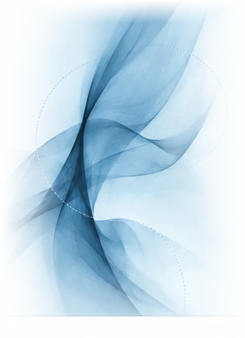

Pesquisa
Desenvolvemos estudos experimentais sobre a linguagem e seus correlatos cognitivos e neurais.
LAPELC² / LABORATÓRIO / UFAL
Estudos experimentais sobre a linguagem, o cérebro e o comportamento humano na Universidade Federal de Alagoas.

O Lapelc² é um laboratório dedicado à investigação científica da linguagem, do cérebro e do comportamento humano, com foco em abordagens experimentais e interdisciplinares.
Desenvolvemos pesquisas que integram processos cognitivos e neurais para compreender como a linguagem é percebida, processada e produzida em diferentes contextos e populações.
Nossa missão e visãoO Lapelc² está vinculado à Faculdade de Letras (FALE) da Universidade Federal de Alagoas (UFAL), integrando o ambiente acadêmico e científico da universidade.
Essa vinculação fortalece o desenvolvimento de pesquisas, a formação de estudantes e a colaboração com outras unidades e grupos de pesquisa.
Faculdade de Letras — UFALDesenvolvemos estudos experimentais sobre a linguagem e seus correlatos cognitivos e neurais.
Contribuímos para a formação de estudantes e pesquisadores em um ambiente colaborativo e interdisciplinar.
Promovemos parcerias com pesquisadores e instituições que compartilham do interesse pela linguagem e pelo comportamento humano.
O Lapelc² está aberto a colaborações acadêmicas, projetos conjuntos e ao interesse de estudantes em desenvolver pesquisas no laboratório.